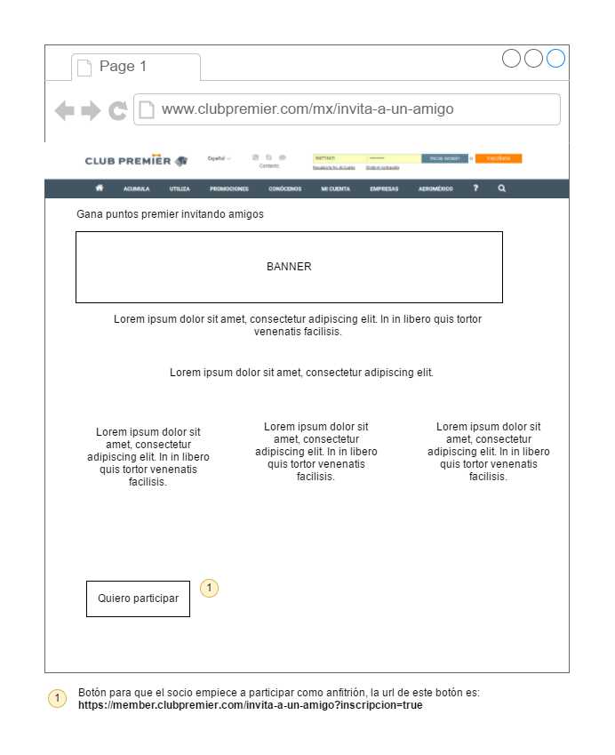
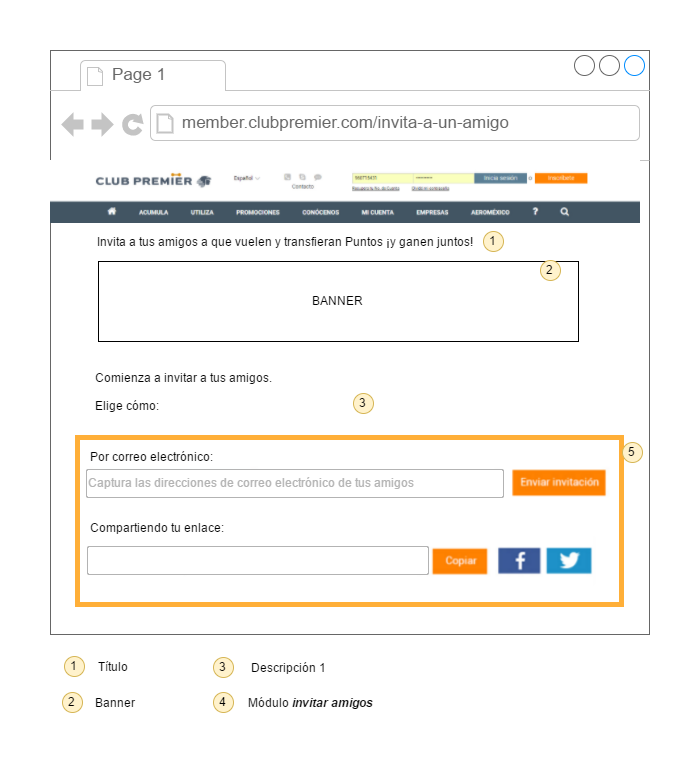
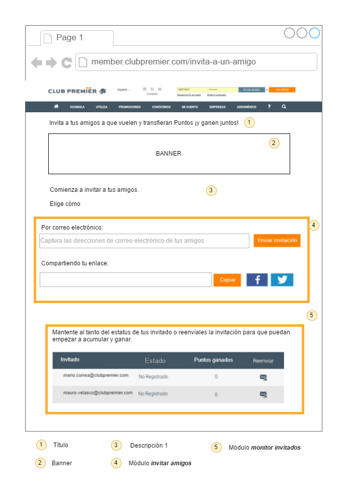
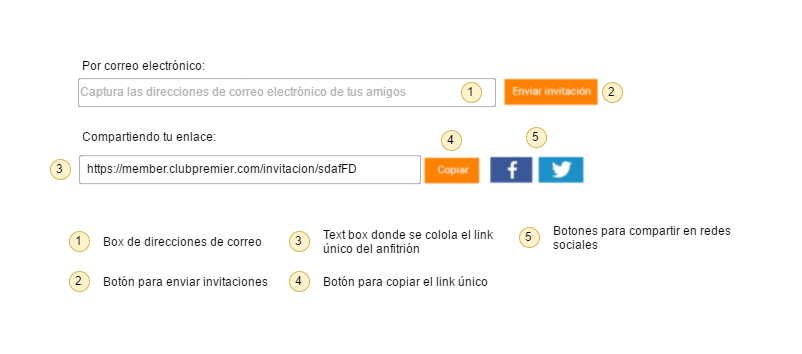
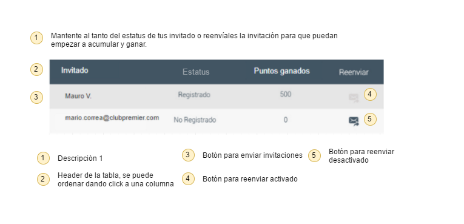

Requerimientos de interfaces
RIA0: Pantalla de información de la promoción en CMS
Pantalla que reside en el CMS donde se mostrará la información general de la promoción. Esta pantalla no será desarrollada por Vinco pero es parte del flujo.

RIA1: Pantalla de anfitrión básica
Pantalla que verán los anfitriones donde pueden enviar invitaciones.

RIA2: Pantalla de anfitrión con módulo de monitor de invitados
Pantalla que verán los anfitriones después de que envían invitaciones o alguien ha aceptado su invitación.

RIA3: Módulo de invitar amigos
Este módulo se podrá ver siempre en el landing anfitrión, con él se podrán enviar invitaciones por correo electrónico y compartir el link único del anfitrion.

RIA4: Módulo de monitor de invitaciones
Este módulo se muestra cuando existen invitaciones para dicho anfitrión, ya sean invitaciones que ya se han registrado o invitaciones que no se han registrado.

- Logo de reenvio de correo: Logo habilitado Logo deshabilitado
{kind=link}
{kind=link}
Requerimientos funcionales
En esta sección se enlistan los requerimientos solicitados para el proyecto. Se indica un id por cada uno y las dependencias entre sí.
TR01: Opción de menú de CMS
Dependencias: No
Cuando un usuario acceda en la sección de menú de Promociones debe existir la opción Invita a un amigo que tenga la dirección URL https://www.clubpremier.com/mx/invita-a-un-amigo y el ícono adjunto.
Adjuntos
Ícono: Archivo Adobe Illustrator
TR02: Opción de menú de landing anfitrión
Dependencias: No
Cuando un usuario acceda en la sección de menú de Mi cuenta debe existir la opción Invita a un amigo que tenga la dirección URL https://member.clubpremier.com/invita-a-un-amigo.
TR03: Solicitar inicio de sesión en landing anfitrión
Dependencias: No
Cuando un usuario sin sesión iniciada accede a la URL https://member.clubpremier.com/invita-a-un-amigo se debe redireccionar a la pantalla de inicio de sesión, al iniciar su sesión correctamente se debe regresar a la página solicitada originalmente respetando los parametros que puedan existir en la URL.
TR04: Redireccionar la página sin ser anfitrión
Dependencias: TR03
Cuando un socio con sesión iniciada acceda a la URL https://member.clubpremier.com/invita-a-un-amigo, si ese socio no está registrado dentro de tabla_codigo_anfitrion ni tiene en la URL el parametro ?incripcion=true, se debe redireccionar al socio a la URL https://www.clubpremier.com/mx/invita-a-un-amigo.
TR05: Inscripción de un anfitrión
Dependencias: TR04
Cuando un socio con sesión iniciada acceda a la URL https://member.clubpremier.com/invita-a-un-amigo?inscripcion=true, si el socio no es un anfitrión se tiene que generar su código único y agregarlo a la tabla tabla_codigo_anfitrion con la fecha y su nombre (incluyendo primer letra del apellido).
TR06: Visualizar landing anfitrión con módulo invita amigo (maquetación)
Dependencias: TR05
Si es que sucede alguna de estas:
- Socio con sesión iniciada que accede a la URL del landing anfitrión y que está dentro de la tabla tabla_codigo_anfitrion.
- Socio que acaba de inscribirse como anfitrión (TR05).
Entonces el socio deberá ver la página landing anfitrión básico.
Adjuntos
{kind=link}
{kind=link}
Título: Invita a tus amigos a que vuelen y transfieran Puntos ¡y ganen juntos!
{kind=link}
Descripción:
Comienza a invitar a tus amigos.
Elige cómo:
Logos redes sociales: Archivo Adobe Illustrator Imagen Facebook Imagen Twitter
{kind=link}
{kind=link}
TR08: Agregar correos válidos en el box de correos del módulo invitar amigos
Dependencias: TR07
Cuando un usuario escriba una dirección de correo válida en el box y presione Enter o el box pierda el foco, la dirección de correo debe agruparse como se muestra en la figura.
Adjuntos
{kind=link}
TR09: Agregar correos inválidos en el box de correos del módulo invitar amigos
Dependencias: TR08
Cuando un usuario escriba una dirección de correo inválida en el box y presione Enter o el box pierda el foco, la dirección de correo debe agruparse como se muestra en la figura.
Adjuntos
{kind=link}
TR10: Enviar correos de invitación
Dependencias: TR09
Cuando todas las direcciones de correo agrupadas en el box sean válidas y el usuario presione el botón Enviar invitación se debe limpiar el box y se deben enviar a dichas direcciones el correo electrónico de invitación. Este correo debe tener el nombre del anfitrión y el link para compartir del anfitrión.
Adjuntos
Asunto del correo: %%Nombreanfitrión%%, te invitó a ganar 15% MÁS Puntos Premier
HTML del correo: archivo
Ejemplo del correo: psd
TR11: Crear registro de la invitación
Dependencias: TR10
Cuando se envían el (los) correos de invitación (TR09), por cada dirección de correo a la que se envío exitosamente se verificará si en los registros de ese anfitrión dentro de la tabla tabla_invitados existe esa dirección de correo, si no existe el registro se va a agregar llenando los campos de la siguiente forma:
| cta_anfitrion | cta_invitado | estado | nombre | puntos | validacion |
|---|---|---|---|---|---|
| Número de cuenta del anfitrión | vacío | no_registrado | Dirección de correo | vacío | vacío |
TR12: Mensaje de envío de correo exitoso
Dependencias: TR11
Cuando un usuario envíe un correo en TR10, y el correo se envíe exitosamente se debe mostrar un mensaje de correo enviado exitosamente.
Adjuntos
Mensaje: Ahora, ya puedes empezar a ganar, el envío fue exitoso
TR13: Mensaje de envio de correo fallido
Dependencias: TR12
Cuando un usuario envíe un correo en TR10, y el correo no se pueda enviar por alguna razón, se debe mostrar un mensaje de error.
Adjuntos
Mensaje por fallo al enviar: ¡Ups! El correo no fue enviado, inténtalo de nuevo.
Mensaje por correos invalidos: ¡Ups! Hay correos no válidos, por favor, verifica la dirección de correo electrónico.
TR14: Visualizar y copiar el link del anfitrión
Dependencias: TR07
Cuando un anfitrión visualiza el módulo de invitar amigos (TR07) debe poder ver su link único de anfitrión, este debe ser la URL https://member.clubpremier.com/invitacion/ + codigo del anfitrión, al presionar el botón Copiar debe copiarse al portapapeles.
Adjuntos
{kind=link}
TR15: Compartir en redes sociales el link del anfitrión
Dependencias: TR14
Cuando un usuario visualiza el módulo de invitar amigos TR07, al presionar los botones de facebook o twitter deberá poder compartir su link de anfitrión en dichas redes sociales.
Adjuntos
Tags para facebook:
<meta property="og:title" content="Inscríbete sin costo a Club Premier"/>
<meta property="og:type" content="website"/>
<meta property="og:image" content="https://s3.amazonaws.com/club_premier/invita/invitacion.jpg"/>
<meta property="og:image:width" content="1200"/>
<meta property="og:image:height" content="600"/>
<meta property="og:site_name" content="Club Premier"/>
<meta property="og:description" content="Ganemos juntos más Puntos Premier, empieza aquí."/>
Tags para twitter:
<meta name="twitter:card" content="summary_large_image"/>
<meta name="twitter:title" content="Inscribete sin costo a Club Premier"/>
<meta name="twitter:description" content="Te invito a ganar conmigo más Puntos Premier, mira como %%Link del anfitrion%%"/>
<meta name="twitter:image" content="https://s3.amazonaws.com/club_premier/invita/invitacion.jpg"/>
<meta itemprop="image" content="https://s3.amazonaws.com/club_premier/invita/invitacion.jpg"/>
TR16: Visualizar invitaciones enviadas por correo
Dependencias: TR11
Cuando un anfitrión accede al landing anfitrión y envía correos de invitación (TR09), por cada dirección de correo que se envió correctamente si no existe este registro en el monitor de invitados este registro se debe agregar. (Esto se refiere a que cuando se manden invitaciones el anfitrión pueda ver que las invitaciones nuevas se agregan al módulo inmediatamente sin tener que recargar la página o hacer alguna acción.)
TR17: Visualizar el módulo de monitor de invitados
Dependencias: TR11
Cuando un anfitrión accede al landing anfitrión y existen registros en la tabla tabla_invitados asociados con él, el socio debe visualizar el módulo de monitor de invitados con dichos registros. En caso que no existan registros el módulo no debe mostrarse.
Ícono: Archivo Adobe Illustrator
TR18: Reenviar una invitación
Dependencias: TR17
Cuando un socio visualiza el módulo de monitor de invitados y presiona el botón Reenviar de una invitación no registrada, se debe enviar el correo de invitación a esa dirección de correo.
TR19: Ordenar por columnas el módulo de monitor de invitados
Dependencias: TR17
Cuando un usuario de click en la cabecera de alguna columna de la tabla del módulo de monitor de invitados los registros de la tabla deben ordenarse alfabéticamente respecto a esa columna, si se da click nuevamente se debe cambiar la dirección del ordenamiento.
TR20: Leer archivo batch con puntos y actualizar tabla_invitados
Dependencias: TR05
Debe existir un sistema que a una hora especifica del día lea el archivo llamado registro_puntos_invita_a_un_amigo_+fecha, por cada registro debe buscar el registro en la tabla tabla_invitados que coincide con el número de cuenta de anfitrión y de invitado y sumar los puntos.